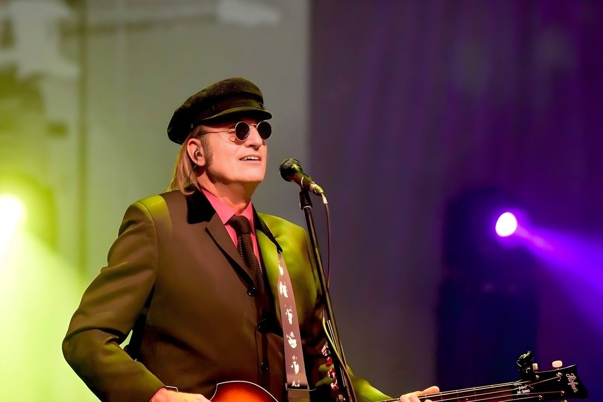
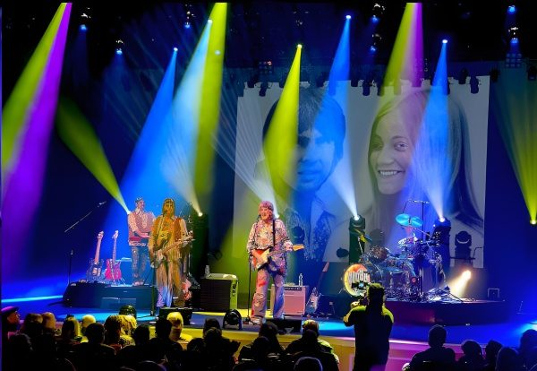
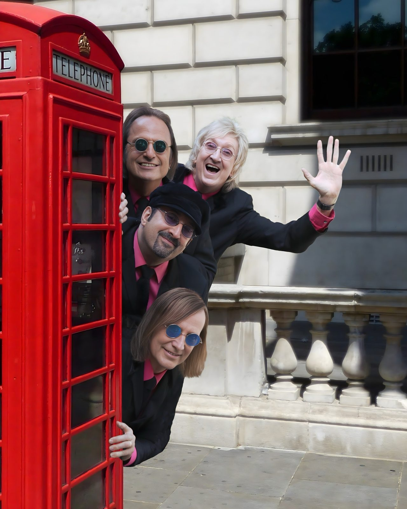
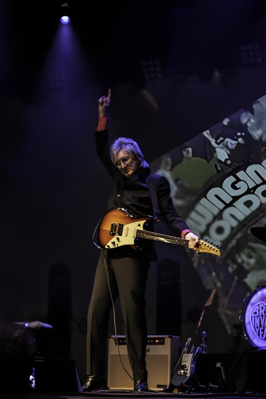
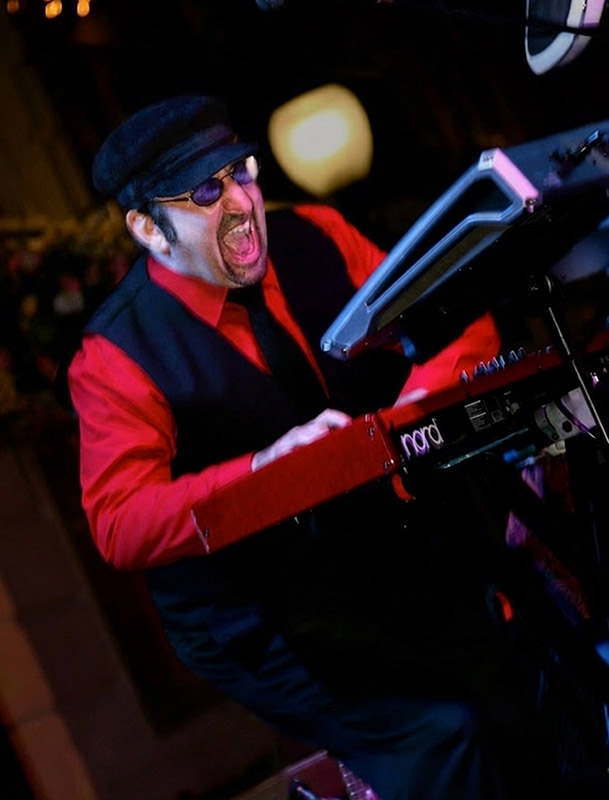
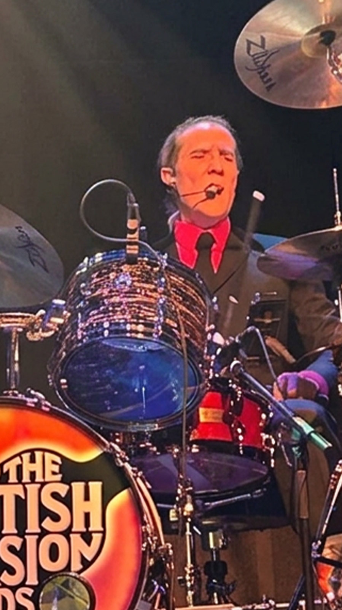

Bobby M.
Bass & Vocals
Co-founder. A live and session veteran who traces it all back to the Beatles on Ed Sullivan.
We're more than a Beatles act. This is the whole first wave of the British Invasion, both sides of the Atlantic… the songs and the look, the way they actually sounded coming off the radio.

It starts with the British. The Zombies, the Dave Clark Five, the Stones, the Who, the Moody Blues, Herman's Hermits, the Kinks. The records that crossed the ocean first.
Bassist Bobby M. puts it plainly. "People keep coming back because we get these songs right. The artists they grew up on, done the way they remember."

Then America answered back. We run the hits that came out of it… the Monkees, the Beach Boys, Steppenwolf, Tommy James and the Shondells, Frankie Valli and the Four Seasons, the Mamas and the Papas, Neil Diamond, the Turtles. And that's a short list.

It ends where it has to end. The Beatles… the four lads from Liverpool, done live and done right.
Guitarist Lee Scott Howard explains the idea behind it. "We asked one question. What if the Beatles had to play this music today as the four-piece band they actually were?" The answer is the whole reason the night closes the way it does.
That's the show. The British Invasion Years, both sides of it.

We've taken this show across the country and overseas. Along the way the four of us have shared stages with some of the biggest names in rock.

It started with Ed Sullivan. Bobby M. (bass) and Lee Scott Howard (guitar) both point to watching the Beatles on that broadcast as the night they decided to do this for a living. Live and session players ever since. Decades later their paths finally crossed for good.
One night, working another project together, the two of them started talking about a different kind of show. The hit songs they grew up on, recreated right down to the outfits and the visuals. That conversation is where The British Invasion Years began.

Word got around. Keyboardist and guitarist Jon Wolf heard about the idea and wanted in, so he started dropping hints at sessions… playing bits of the Abbey Road medley until somebody noticed. It worked. He was on board fast.
Then they needed a drummer. Bobby's longtime friend Dave Hall was free at the right moment and said yes. That was the lineup. "Four Boys Making All That Noise" hit the road.

Bass & Vocals
Co-founder. A live and session veteran who traces it all back to the Beatles on Ed Sullivan.

Guitar & Vocals
Co-founder. Bobby's best friend, in on the idea from the start, and the one who shapes the Beatles finale.

Keys, Guitar & Vocals
Keys and guitar. Played the Abbey Road medley at sessions until the hint landed and he was in.

Drums & Vocals
Bobby's longtime friend. Free at the right moment, and the man who finished the lineup.